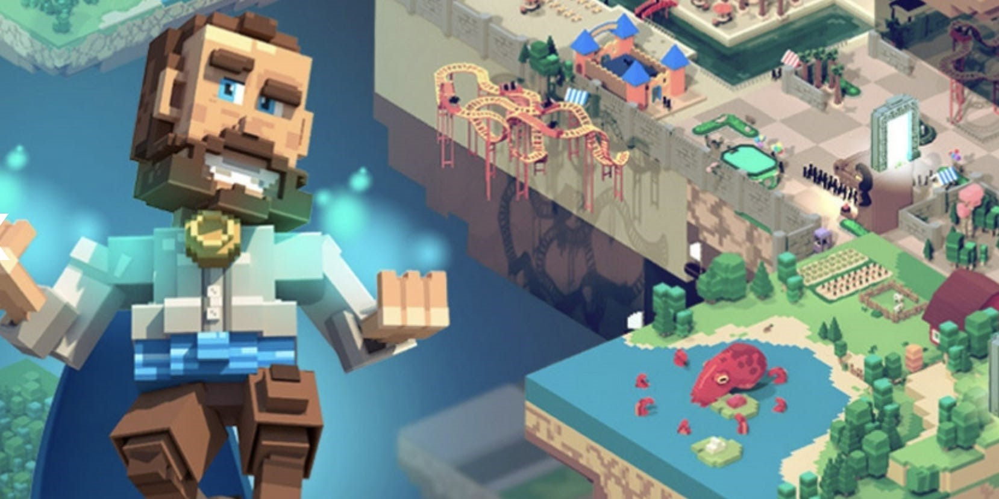

TECHNOLOGY
BLOCKCHAIN AND CRYPTOCURRENCIES
Blockchain was introduced for the first time by Stuart Haber and W Scott Stornetta in 1991 and 2008 was the birth of Bitcoin – the first currencies using blockchain technology. Up until now, people just started talking and have attention for cryptocurrencies, Bitcoin, Ethereum, Dogecoin, … I believe this is just the first state of what this technology can bring us and cryptocurrencies are the future currencies.
First, let’s talk about blockchain. Blockchain technology is very different from typical database structure. Data will flow into a block and when it is full of data, it connects to the previous block. This kind of structure has a lot of benefit that normal database can not do but the most important attribute is the security. Every information on blockchain is immutable, transparent; which mean everyone can view the data but no one can change it. It is almost impossible for hackers to hack into blockchain. All types of data can be stored on blockchain but the most common one is act as a ledger for transaction of cryptocurrencies.
Cryptocurrencies is a form of payment that works on blockchain. Many companies created their own currencies which called token. Those can be referred to arcade coin, you need to use real fiat to buy it in order to use the company services.
Blockchain and cryptocurrencies can do a lot of things that traditional technology can not do. The most recent one and start to become trendy is play-to-earn games or Game-fi (gaming and finance). People can participate in a game, play to get tokens or trading on marketplace to earn real life profit. Some popular games right now are Axie Infinity (6,5 billion $ market cap), Elemon (41 million $ market cap), Faraland (31 million $ market cap), … Vietnamese are currently leading this market because those top games above are from Vietnam. Game-fi can bring user a huge amount of profit if they have the right strategy and investment. Some people quit their jobs to play game-fi full-time. But this field still new and have a lot of hidden dangers, investors should do their own research before hoping into game-fi. People also start talking about Non-Fungible Tokens or NFTs, which can be any kind of files like photos, videos, … but is one-of-a-kind, unique. By this attribute, people usually treat NFTs as collectibles, there are some collections worth millions of dollars.

One of the most popular use cases of cryptocurrencies and blockchain that we can’t skip is Defi (Decentralized finance). Defi basically Defi recreate the Wall Street on chain but without any associated costs and you don’t need any paper work or a third-party service. You can do most thing that bank support with Defi: lending, borrowing, earn interest, trade assets, … Because Defi works on blockchain so it contains its attribute which is global, pseudonym and open to all. Some advantages of Defi:
- Transparent: transactions are public and anyone can see it.
- Pseudonym: No personal information, needed. You just have to access with your digital wallet.
- Fast: No paperwork, third-party needed. All transaction can be done online.
Like I said before, this is just the first state for blockchain and cryptocurrencies, they still have a lot of room to shine. For the future, I strongly believe creating a virtual world that people can talk, interact together, buy and sell items, do services and earn money on chain is achievable, that is what people usually call “Metaverse”, even Facebook changed their name to “Meta” to keep up with this trend. Think of metaverse like playing GTA, you can do all kind of stuff in virtual world but the only difference is everything is on chain and you can earn real money. Even owning virtual estate can make you money by claiming taxes and lending. In fact, a lot of metaverse land has been sold for a ridiculous price because people believe this is the right investment for the future. Some famous brands also started to prepare to sell their products, have marketing campaigns in the metaverse by owning lands and properties.

Blockchain and cryptocurrencies are and will bring a lot of changes to the world. It has so much potential in the near future. Some impressive impacts that blockchain can potentially overcome:
- IoT: reduce data breaches in smart devices.
- Healthcare: Store patients health records, medicine tracking accurately.
- Media industry: NFT help prove ownership, have a protection of copyright and royalties.
- Government: Create a transparent attribute for events that require fairness like voting.
- Cybersecurity: blockchain is almost un-hackable.
- Metaverse: Create a virtual world that people, companies can work, sell, buy, for real life profit.
- Game-fi: Play games to earn real life profit.
Cryptocurrencies will also be impactful to the world:
- Defi application: Earn passive income from lending, staking.
- Reduce the risk of fraud: when talking about money, fraud is one of the most concern things, but with cryptocurrencies everything is secure.
- Faster transaction.
- Create an opportunity for everyone to invest with high return but also high risk.
- No worry about inflation.
Those are just a small number of examples that blockchain and cryptocurrencies can do. All people can be affected from those changes, but the more you do research on this field, the better benefits it will bring to you. Some people said that bitcoin is gold of the 20th century so buy it, hold it and you will be rich someday (Not financial advice!).
Blockchain and cryptocurrencies recently have changed my daily routine quite much. Back in June 2021, I first heard about Game-fi, did some research and make a little investment at that time in a game call Faraland-The biggest war game on blockchain (Faraland.io). I bought some $Fara (token of the game) and some NFT hero to later compete to each other and earn $Fara. The game just launched recently and it was very impressive to me. I spent about 1hours each they playing Faraland and earn about 8 $Fara/day (~12$). Faraland become my passive income and hobby just like that. I slowly get myself research more about cryptocurrencies and now it has become my morning routine – read news about crpyto. After Faraland, I got a chance to participate in Elemon IDO (Initial DEX Offering) and got a return over 13,000%, that was my biggest success in an investment ever. I soon use that money to invest in other potential projects in my vision and currently it looks good. I also invest in NFTs project, basically just hunt the NFTs to buy at retail price and sell at higher price, this is very profitable (sometimes 1000%). Cryptocurrencies change my financial life a lot, I have a passive income stream, I can buy everything I like at the age 18 but I decided to hold my investment long term and aim for a bigger dream. This market brings ridiculous profit but always do your own research about the project before investing in them. I have gone through some harsh time half of my portfolio was gone. This is a high-risk high-reward investment and I have learned a lot from it. Some of my friends also hop into this field at the same time with me and it also made their life better, but also have night that they couldn’t sleep because the market is red.